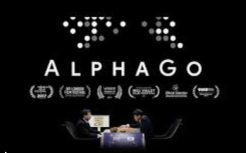
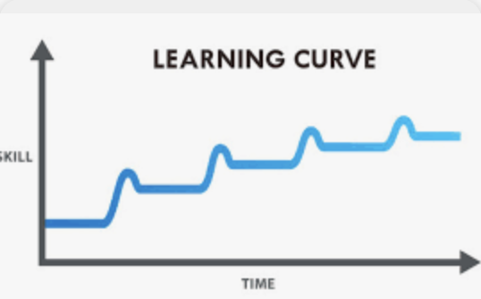
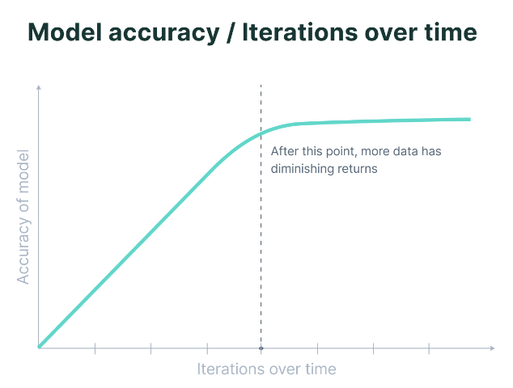
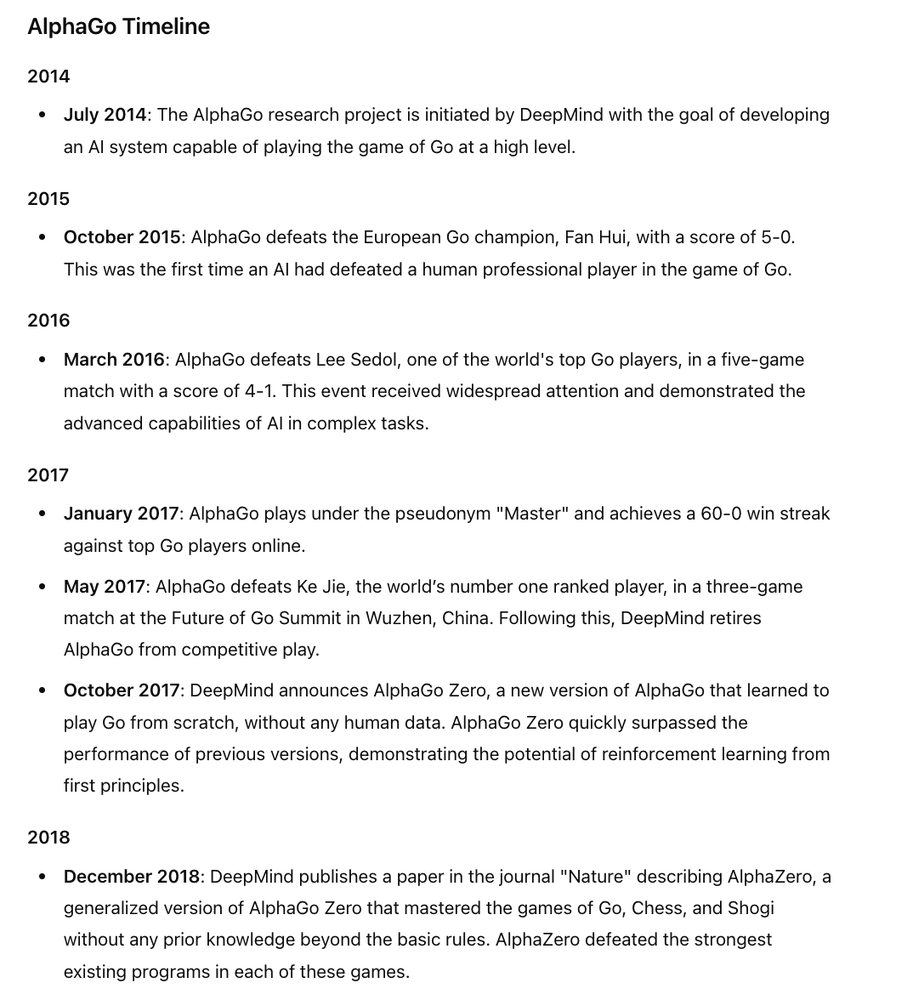
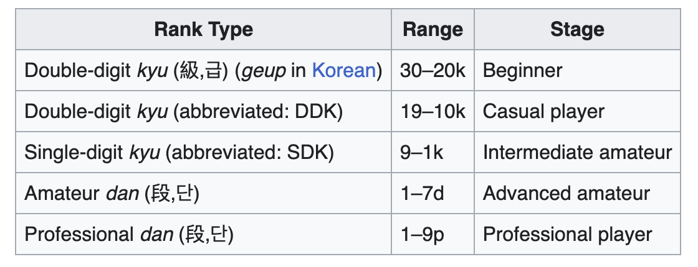
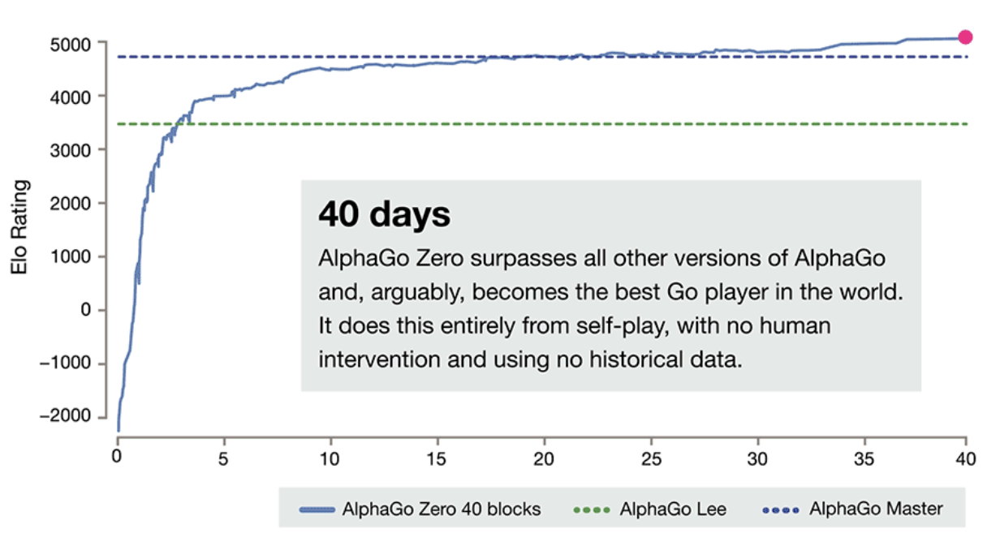

I vacillate between GenAI is hype to GenAI is gamechanging. I think people on both sides make good points to support their case. That being said, I think Amara's Law is at play here - We tend to overestimate the effect of a technology in the short run and underestimate the effect in the long run.
Most arguments for GenAI being hype are a good reflection of Amara's Law. The pushback is often around - 'you still need someone (a human) who really knows what they are doing to get anything of value out of GenAI.' I tried using it and it requires too much work.
I recently watched the AlphaGo Documentary - https://www.youtube.com/watch?v=WXuK6gekU1Y. It is free on YouTube and if you have not watched it, I highly recommend you do. It's like Queen's Gambit for Go. Where Beth is played by AlphaGo.
Go is an abstract strategy board game for two players in which the aim is to capture more territory than the opponent by fencing off empty space. The game was invented in China more than 2,500 years ago and is believed to be the oldest board game continuously played to the present day.
To answer why I feel Amara's Law is at play with GenAI and GenAI is not hype, it is all about learning. Learning is how we get better and there is a fundamental difference between human learning and AI learning.
Here is a visual of human learning. We gain some skills, we plateau, we then have a breakthrough then we settle back down to steady state and then we have another spike.

AI learning is more of an exponential curve in the beginning followed by a logarithmic curve as it plateaus.

In case you are wondering what all this has to do with the topic of this post, AlphaGo demonstrates this crazy ability to learn and get better. Here is a timeline for AlphaGo.

AlphaGo went from a beginner in July 2014 to a 2 Dan in October 2015 to 9 Dan in March 2016. Just for context here is a table with the Dan ranking system.

In 2 years it was the best in the world. For context it can take the best humans 10-20 years and as we all know 99.99% will never make it and be stuck at Single-digit kyu.
What was also fascinating was the reaction of Lee Sedol (the world champion) before his match. He said that AlphaGo had beaten a lowly 2 Dan and there was no way it could be competitive with a 9 Dan. He said, AlphaGo did not have creativity or intuition. He was very confident he would win 5-0.
Doesn't this sound like a lot of GenAI naysayers. To be fair, if Lee Sedol had played AlphaGo in Oct 2015, he would have probably won 5-0, but he played it in Mar 2016. Humans cannot fathom that a machine could go from 2 Dan to 9 Dan in 5 months. This is because our frame of reference is human learning as opposed to AI learning which is exponential.
What is even more fascinating and this is not in the movie, is that AlphaGo Zero the next version beat the AlphaGo version that beat Lee Sedol after 3 days of learning and beat the best AlphaGo verison (Master) in 40 days. Also, it not only learnt how to play Go but it learnt Chess too (from scratch).
Not only does it learn exponentially, it is learning to learn exponentially.
Over the course of millions of AlphaGo vs AlphaGo games, the system progressively learned the game of Go from scratch, accumulating thousands of years of human knowledge during a period of just a few days. AlphaGo Zero also discovered new knowledge, developing unconventional strategies and creative new moves that echoed and surpassed the novel techniques it played in the games against Lee Sedol and Ke Jie.

There are a few other things that came to mind - AI will not take our jobs but a human with AI will. You could literally see a human with AI (AlphaGo) beat the best human in the world. So technically the human with AI did the job better. But then I ask myself, what would it take to replace the human, what value is the human really adding. I think this is going to play out in a lot of jobs.
Then we come to humans getting nervous. AI does not show emotion or get nervous. Humans make mistakes. AI does not make mistakes (or if it does it is calculated or a hallucination).
What this means for GenAI is that whatever we have today, for example the Toys' R Us commercial using Sora or this news - Morgan Stanley Advisors getting an AI assistant, is just the beginning of the exponential curve. Yes the technology is not there yet, but in a blink of an eye it will surpass us at all kinds of stuff.